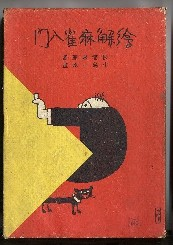
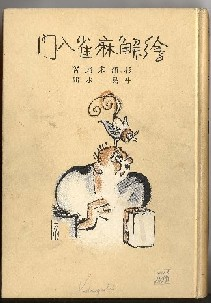
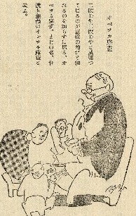
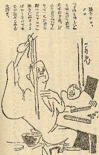

Book review 書壇。
（６６）絵解麻雀入門
 
昭和５年11/20、大阪屋号書店から出版された本。著者の杉浦末郎は、日本麻雀草創期の重鎮。杉浦氏は、大阪屋号書店からたくさんの入門書を出版している。
絵解麻雀というと図解式の入門書をイメージしてしまうが、実は全然関係ない。函付きで装丁もしっかりしているが、中はごく普通の入門書。そこで麻雀揺籃期に出版された入門書という資料的な価値はあるが、雀学的には特に言及するほどのことははない。
しかし見たとおり、函絵にしても表紙絵にしても、麻雀入門書は思えないのんきな父さん風味のほのぼのとした絵。牛島一水という画家の挿絵であるが、なんともいい味。
 
オベッカ麻雀 眼をシロクロ
オベッカ麻雀は、重役との麻雀で、部下がワザと見逃しをしている場面。眼をシロクロは、食べる時間も惜しんで麻雀しているところ。
こういう挿絵が随所にあるので、絵解麻雀というタイトルがついている。面白い挿絵があるからといって絵解麻雀というタイトルはどうかと思うが、σ(-_-)は以前からこの挿絵のタッチが非常に気に入っている。そこで紹介する気になった。(^-^；